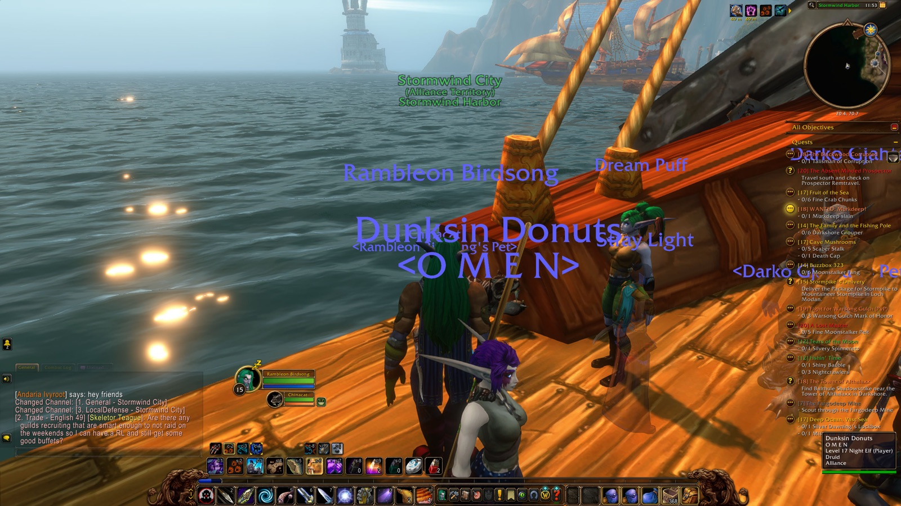
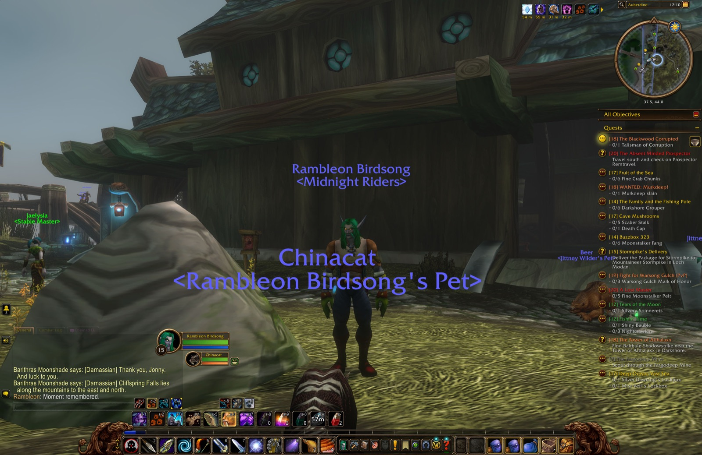

4:28 PMOverheard in Auberdine: Selene Blackforest, Lilynilly Brightgrove, Hinokö Kado and 2 others
Selene Blackforest “we meet again!!!”
Lilynilly Brightgrove flirts with Zuna Skyshadow.
Hinokö Kadoyells “For the Hor.....Alliance!”
Elethir Blackflame waves at Whitewolf Winterfang.
Whitewolf Winterfang bows before Elethir Blackflame.
Whitewolf Winterfang bows before Elethir Blackflame.
Elethir Blackflame bows down graciously.
8:45 PMA scene in Mist's Edge, alone
Rambleon Birdsong “thx border”
Rambleon Birdsong “u get it?”
9:20 PMA scene in Remtravel's Excavation with Seananigans Brule, Arwen Arathorn, Cassidy Darkstarr and 5 others
Seananigans Brule “just finished”
Seananigans Brule “thanks guys good luck”
Arwen Arathorn “woo”
Cassidy Darkstarr “gtfoh”
Kathrynne Rose “got room for 3”
Cassidy Darkstarr “yes”
Longbranch Bigcrit “inv”
Kathrynne Rose “inv me and Longbranch please?”
Kathrynne Rose “ah full. nvm”
Cassidy Darkstarr “sry”
Rambleon Birdsong “sorry k”
Kathrynne Rose “would you guys mind helping me do the quest after yours?”
Cassidy Darkstarr “rambleon will”
Kathrynne Rose “just failed mine due to my group leaving while he was being attacked”
Moderate Option “i can”
Kathrynne Rose “thanks a ton”
Cassidy Darkstarr “where is this jabroni”
Beorn Oakhide “inv?”
Beorn Oakhide “nvm 5 already lol”
Moderate Option “full but some of us are doing another after”
Cassidy Darkstarr “we full, bit katherine is wating for peeps after us”
Cassidy Darkstarr “<stone cold checking his watch gif>”
Vaowyn Walker falls asleep. Zzzzzzz.
Cassidy Darkstarr “gl yall”
Kathrynne Rose “thanks”
Moderate Option “gg ty”
10:39 PMOverheard in Auberdine: Pharmercy Moonsong, Rathon Moonblade, Chillvester Stallone and 5 others
Pharmercy Moonsong raises her fist in anger.
Pharmercy Moonsong raises her fist in anger at Innkeeper Shaussiy.
Rathon Moonblade “Attack is something of a specialty of mine. It has dealt over 13,000 damage.”
Chillvester Stallone “I have completed more than 100 quests. Somehow, everyone still has one more favour to ask.”
Phlux Fizzlespark lies down before Ladi Pipwhistle.
Rathon Moonblade thanks Belly Saurus.
Phlux Fizzlespark “FANCY”
Bromir Frosttrail falls asleep. Zzzzzzz.
Death Viper “can i get invite for sleeping bag?”
Healey Healest “anyone have a peacebloom?”
Huntn Forever “I have leather if someone can make tent”
11:17 PMA scene in Mist's Edge, alone
You wave at Cassidy Darkstarr.
1:26 AMOverheard in Trade District: Pooka Boo, Shadoen Elderclaw, Dukara Bladewhisper and Magics Priest
Pooka Booyells “I AM SPEED!”
Shadoen Elderclawyells “Yes you are!”
Pooka Booyells “I AM SPEED!”
Pooka Booyells “I AM SPEED!”
Shadoen Elderclawyells “Youi go you!”
Dukara Bladewhisper falls asleep. Zzzzzzz.
Magics Priestyells “{skull} Death Riders {skull} has been a guild since 2005 lots of long time members/friends. We are looking for more Friends to fill our ranks for Raids , Quest , and Dungeons for Forever all are welcome. {skull}”
The Journey
434 moments, in order · fold
11:21 AM — Began the adventure
11:21 AM — Entered Auberdine (Darkshore)
11:22 AM — Entered Darkshore
11:23 AM — First Raging Moonkin slain
11:24 AM — Completed "As Water Cascades"
11:24 AM — Accepted "The Fragments Within"
11:25 AM — First Moonkin slain
11:25 AM — Looted Ancestral Woollies (Uncommon)
11:28 AM — Entered Auberdine (Darkshore)
11:29 AM — Reached Level 15
11:29 AM — Looted Curvewood Dagger (Uncommon)
11:29 AM — Completed "The Fragments Within"
11:29 AM — Accepted "WANTED: Murkdeep!"
11:33 AM — Accepted "Fruit of the Sea"
11:37 AM — Accepted "The Absent Minded Prospector"
11:37 AM — Accepted "The Blackwood Corrupted"
11:47 AM — Entered The Long Wash (Darkshore)
11:48 AM — Entered Mist's Edge (Darkshore)
11:52 AM — Entered The Long Wash (Darkshore)
11:52 AM — Entered The Veiled Sea (Darkshore)
11:53 AM — Entered Stormwind Harbor (Stormwind City)

11:53 AM — Entered Stormwind City
11:55 AM — Entered The Canals (Stormwind City)
11:56 AM — Entered Trade District (Stormwind City)
12:03 PM — Looted Fine Shortbow (Uncommon)
12:07 PM — Hearthed home to Auberdine
12:07 PM — Entered Auberdine (Darkshore)
12:10 PM — Marked moment in Auberdine

12:10 PM — Marked moment in Auberdine
12:22 PM — Entered Darkshore
12:24 PM — Entered Bashal'Aran (Darkshore)
12:24 PM — Entered Darkshore
12:24 PM — Entered Bashal'Aran (Darkshore)
12:24 PM — Entered Darkshore
12:24 PM — First Rabid Thistle Bear slain
12:24 PM — First Thistle Bear slain
12:26 PM — First Moonstalker slain
12:29 PM — Looted War Torn Tunic of Spirit (Uncommon)
12:36 PM — Entered Cliffspring River (Darkshore)
12:38 PM — Entered Darkshore
12:42 PM — 20/20 Rabid Thistle Bear slain — "Cleansing of the Infected"
12:43 PM — Slain by Moonstalker in Darkshore
12:44 PM — Back among the living
12:49 PM — Entered Bashal'Aran (Darkshore)
12:49 PM — Entered Darkshore
12:50 PM — 6/6 Moonstalker Fang — "Buzzbox 323"
12:50 PM — Entered Cliffspring River (Darkshore)
12:51 PM — Completed "Buzzbox 323"
12:51 PM — Accepted "Buzzbox 525"
12:53 PM — Entered Darkshore
12:54 PM — Completed "The Tower of Althalaxx"
12:54 PM — Accepted "The Tower of Althalaxx"
12:55 PM — Entered Tower of Althalaxx (Darkshore)
12:55 PM — Discovered Tower of Althalaxx
12:55 PM — Discovered Tower of Althalaxx
12:55 PM — First Dark Strand Fanatic slain
12:57 PM — Entered Darkshore
12:59 PM — Entered Tower of Althalaxx (Darkshore)
12:59 PM — Joined forces with Steez (Hunter)
1:00 PM — Entered Darkshore
1:00 PM — Entered Tower of Althalaxx (Darkshore)
1:01 PM — Slain by Delmanis the Hated in Tower of Althalaxx
1:01 PM — Entered Darkshore
1:02 PM — Entered Cliffspring River (Darkshore)
1:03 PM — Entered Darkshore
1:03 PM — Entered Tower of Althalaxx (Darkshore)
1:03 PM — Back among the living
1:04 PM — Slain by Dark Strand Fanatic in Tower of Althalaxx
1:05 PM — Entered Darkshore
1:06 PM — Entered Cliffspring River (Darkshore)
1:06 PM — Entered Darkshore
1:06 PM — Back among the living
1:07 PM — Slain by Dark Strand Fanatic in Darkshore
1:08 PM — Entered Cliffspring River (Darkshore)
1:08 PM — Back among the living
1:08 PM — Entered Darkshore
1:09 PM — Entered Tower of Althalaxx (Darkshore)
1:10 PM — Entered Darkshore
1:10 PM — Entered Tower of Althalaxx (Darkshore)
1:11 PM — Parted ways with Steez
1:12 PM — Entered Darkshore
1:14 PM — Entered Tower of Althalaxx (Darkshore)
1:14 PM — Slain by Dark Strand Fanatic in Tower of Althalaxx
1:14 PM — Entered Darkshore
1:16 PM — Entered Cliffspring River (Darkshore)
1:16 PM — Entered Darkshore
1:17 PM — Entered Tower of Althalaxx (Darkshore)
1:17 PM — Back among the living
1:17 PM — Entered Darkshore
1:17 PM — Slain by Dark Strand Fanatic in Darkshore
1:19 PM — Entered Cliffspring River (Darkshore)
1:19 PM — Entered Darkshore
1:19 PM — Back among the living
1:20 PM — Entered Tower of Althalaxx (Darkshore)
1:20 PM — Joined forces with Deadeye (Hunter)
1:20 PM — Slain by Dark Strand Fanatic in Tower of Althalaxx
1:21 PM — Parted ways with Deadeye
1:21 PM — Entered Darkshore
1:22 PM — Entered Cliffspring River (Darkshore)
1:22 PM — Entered Darkshore
1:22 PM — Entered Tower of Althalaxx (Darkshore)
1:22 PM — Back among the living
1:22 PM — Entered Darkshore
1:25 PM — 4/4 Worn Parchment — "The Tower of Althalaxx"
1:25 PM — Completed "The Tower of Althalaxx"
1:25 PM — Accepted "The Tower of Althalaxx"
1:25 PM — Deliver Balthule's letter to Delgren the Purifier in Ashenvale Forest. — "The Tower of Althalaxx"